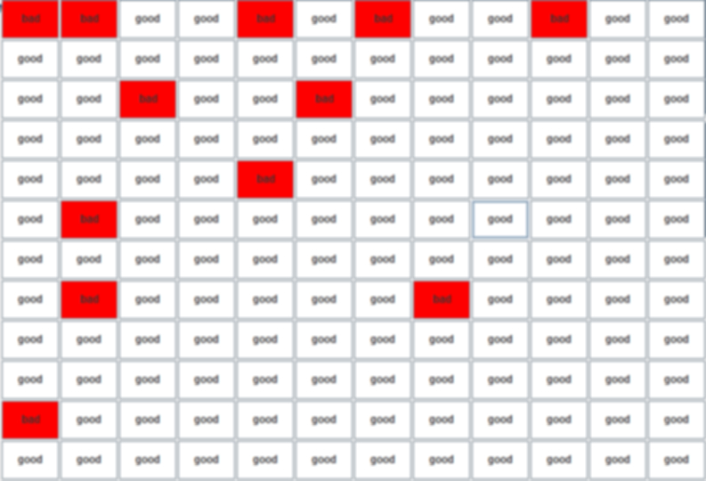
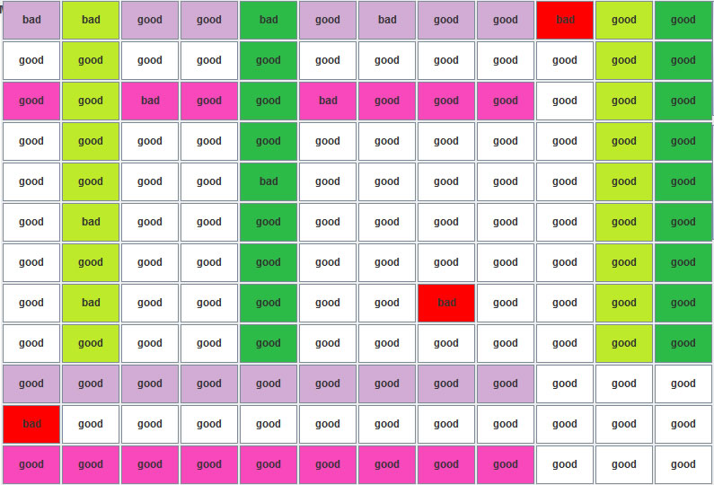
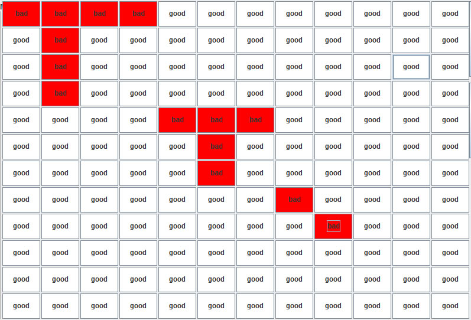

Two Algorithms for Row/Column Replacement in Defective Memory Cells:
A. Row First Algorithm:
Use all available spare rows first,replace defective rows with all the available spare rows. And then use all the available spare columns, replace defective columns with all the available spare columns. Note that spare rows or columns may also have defective cells making them unavailable.
Example 1:
Suppose we have a memory array which has 9 rows, 9 columns, 3 spare rows and 3 spare columns(FIG.1). Row 1 to Row 9 are working rows, and Row 10 to Row 12 are spare rows; Column 1 to Column 9 are working columns, and Column 10 to Column 12 are spare columns. The red cells in the array are defective ones. Also note that Spare Row 2 and Spare Column 1 are currently unavailable, because each of them has one bad cell(red). Based on the Row First Algorithm, Spare Row 1 and Spare Row 3 would replace Row 1 and Row 3, respectively; and then, Spare Column 2 and Spare Column 3 would replace Column 2 and Column 5, respectively. After replacement, the only defective cell unfixed would be the one in Row 8 and Column 8. Fig.2 shows the result.

FIG.1: 9-row, 9-column memory array with defective cells

FIG.2: Memroy Array after Row First Algorithm
B. Must Repair Row/Column Algorithm:
Step1: First determine the Must Repair Rows as well as the Must Repair Columns. The number of defective cells in a Must Repair Row/Must Repair Column should be larger than the number of available spare columns/rows, respectively. Note that spare rows or columns may also have defective cells making them unavailable.
Step2:Use available spare rows/columns to replace Must Repair Rows/Columns.
Step3: After this, other rows (columns) may become must-repair. Repeat the above steps until there is no Must Repair Row or Column.
Step4: Use Row First Algorithm to deal with the remaining defective cells.
Example2:
Below is a memory array which has 9 rows, 9 columns, 3 spare rows and 3 spare columns. Row 1 to Row 9 are working rows, and Row 10 to Row 12 are spare rows; Column 1 to Column 9 are working columns, and Column 10 to Column 12 are spare columns. The red cells in the array are defective ones.
Step 1:First determine the Must Repair Rows as well as the Must Repair Columns.The number of defective cells in Row 1 is 4, which is larger than the number of available spare columns, which is 3. At the same time, the number of defective cells in Column 2 is 4, which is larger than the number of available spare rows, which is 3.
Step 2:So, Row 1 and Column 2 would be the must repair row and column, respectively. And Spare Row 1 and Spare Column 1 would replace Row 1 and Column 2, respectively.
Step 3: After the above step, the number of both available spare rows and column becomes to 2. So Row 5 and Column 6 would be the must repair row and column at this time, because the number of bad cells(both are 3) is larger than 2. Then Spare Row 2 and Spare Column 2 would replace them.
Step 4: There is no must repair row or column left, use Row First Algorithm to replace the rest of the bad cells. FIG.4 shows the result.In this case, the memory array is fully fixed with spare rows and columns.

FIG.3: 9-row, 9-column memory array with defective cells
FIG.4: Memroy Array after Must Repair Row/Column Algorithm
References£º"Fault-Tolerant Systems" by Israel Koren and C. Mani Krishna.P263 - P267
Dilip K. Bhavsar,"An Algorithm for Row-Column Self-Repair of RAMs and Its Implementation in the Alpha 21264," International Test Conference (ITC'99), pp.311-318,1999